Experiencia local
Más de una década ejecutando obras en la IV Región, con equipos que conocen las condiciones del terreno y los requerimientos de cada comuna.
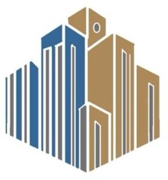
Región de Coquimbo — IV Región de Chile
Desde 2015 en la IV Región. +60 proyectos en infraestructura, edificación e ingeniería civil. Transformamos tu visión en obras reales con conocimiento del territorio y estándares técnicos exigentes.
Sobre Nosotros
Desde 2015 en la IV Región, Guayacán ha construido una trayectoria sólida en obras civiles y urbanizaciones, estructuras y galpones y mantención industrial. Conocemos el territorio, trabajamos con instituciones locales y entregamos proyectos con rigor técnico y cumplimiento normativo.
Más de una década ejecutando obras en la IV Región, con equipos que conocen las condiciones del terreno y los requerimientos de cada comuna.
Compromiso con altos estándares de calidad, seguridad y transparencia en cada etapa del proyecto.
Comunícate por WhatsApp y recibe respuesta ágil, con atención cercana en cada etapa del proyecto.
Quiénes Somos
Profesionales de arquitectura, ingeniería y derecho que acompañan cada obra con criterio técnico y compromiso regional.
Gerente General y Representante Legal
Orienta la estrategia comercial y operativa de la empresa, coordinando equipos y asegurando el cumplimiento de plazos, calidad y seguridad en cada proyecto.
Arquitecto
Universidad Mayor (2013). Especializado en tecnologías digitales aplicadas a la arquitectura, gestión de proyectos y metodologías BIM para obras residenciales y comerciales.
Ingeniero Civil
Universidad Andrés Bello. Más de 16 años en proyectos civiles, estructurales e hidráulicos, con experiencia en coordinación de obras de alta exigencia técnica.
Abogado
Abogado de Ovalle (2014), con formación de postgrado en derecho penal y laboral. Aporta respaldo jurídico a la operación y a los proyectos de la constructora.
Qué Hacemos
Obras civiles de gran escala: muros, pavimentación, urbanizaciones e infraestructura ejecutada con precisión estructural y cumplimiento normativo estricto.
Ver obras civiles y urbanizaciones →Edificación de oficinas, naves y galpones industriales con estándares de diseño moderno y ejecución eficiente en plazos.
Ver estructuras y galpones →Renovación de cubiertas, restauración de fachadas y pinturas de alto tráfico para mantener operativos los recintos productivos.
Ver mantención e industrial →Servicios sanitarios y de alcantarillado: redes de agua potable, evacuación de aguas servidas y obras de saneamiento con altos estándares técnicos.
Consulta sobre esta área →Obras Que Hablan Por Sí Solas
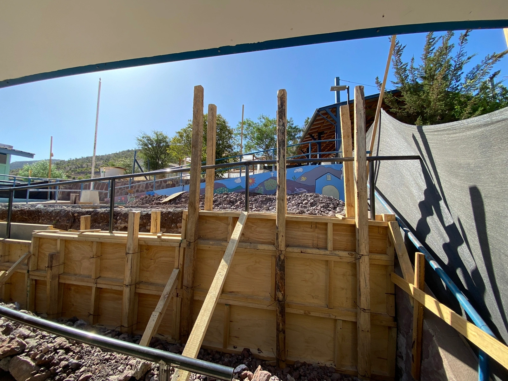
Ejecución de espacios interiores refinados con estándares académicos de alta exigencia técnica y arquitectónica.
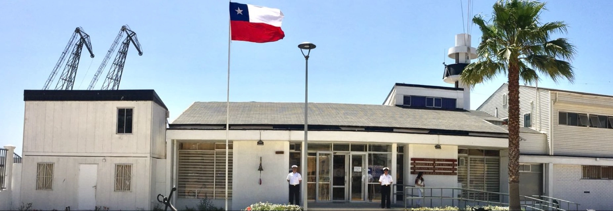
Obra institucional con fachada exterior limpia y moderna, entregada bajo estrictos protocolos de seguridad y calidad.
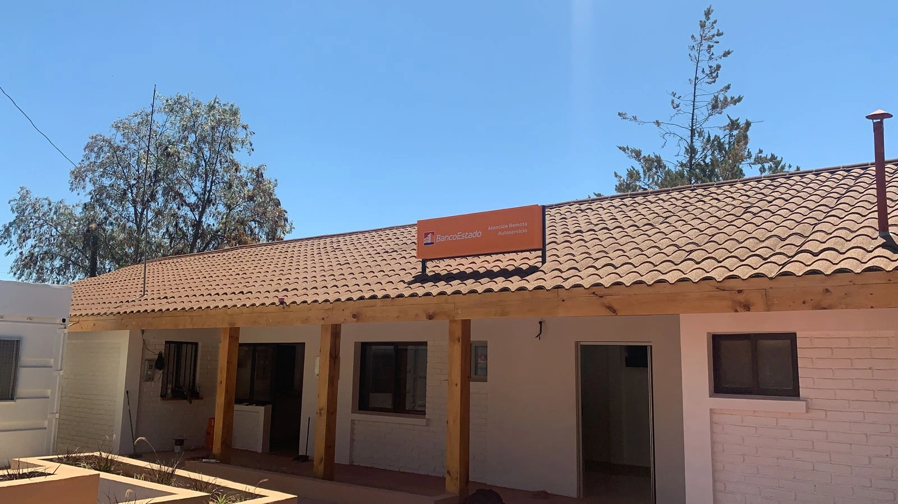
Edificación comercial institucional ejecutada con estándares de calidad, seguridad y cumplimiento normativo en la IV Región.
En Terreno
Confianza Institucional
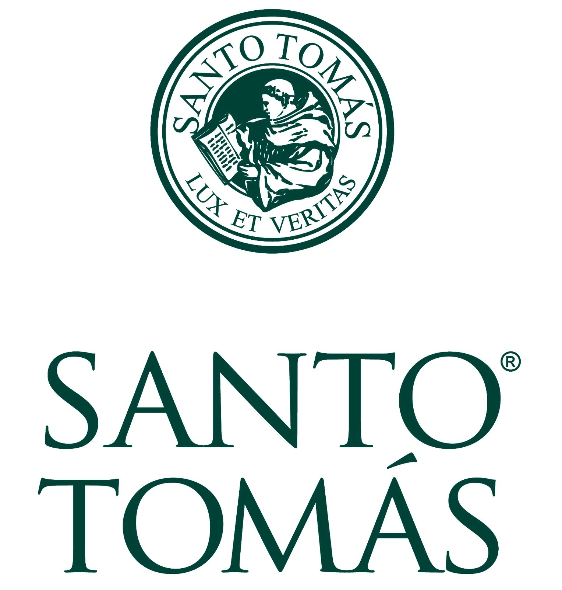
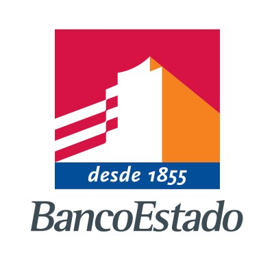
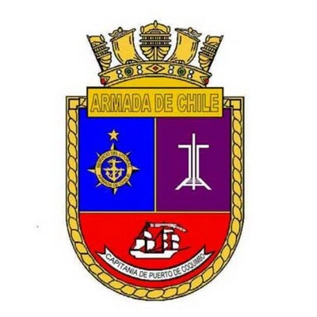
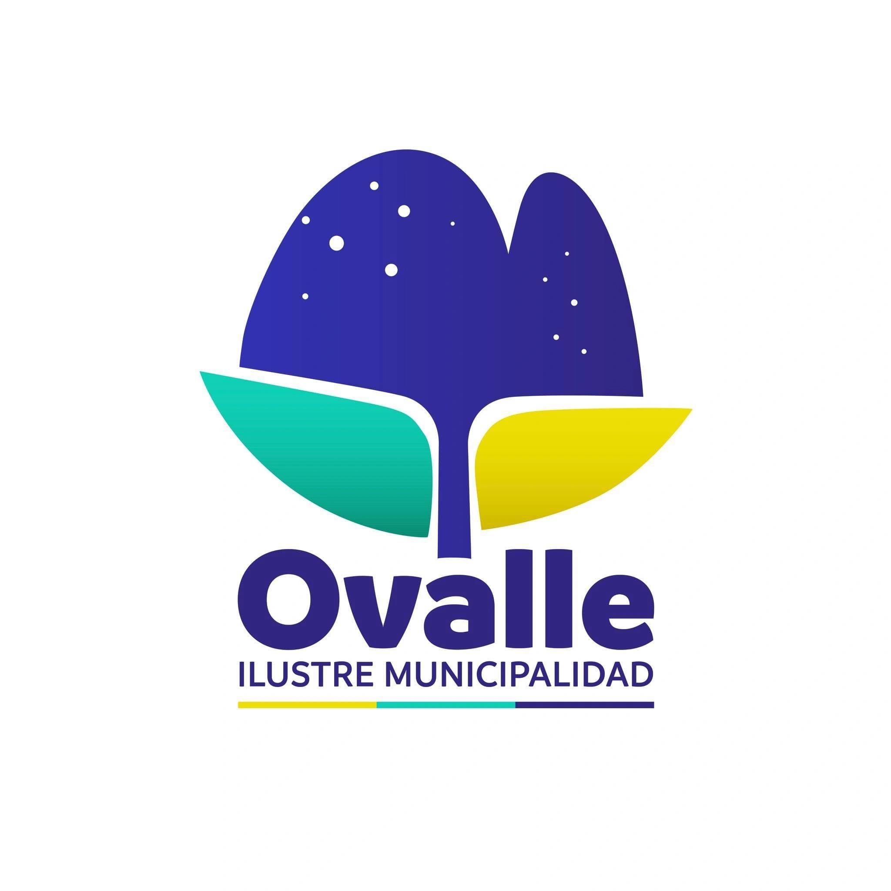
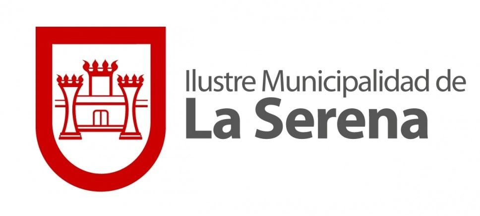
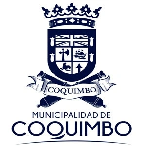
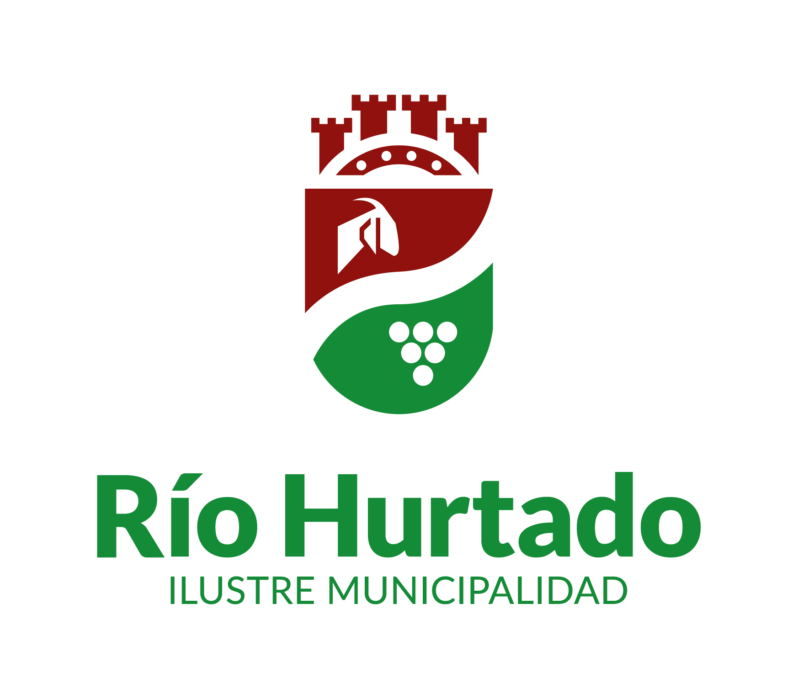
Marco institucional
Trabajamos alineados a lineamientos públicos y gremiales del rubro. Estas instituciones son referentes útiles para normativa, urbanismo y buenas prácticas.